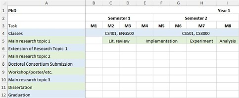

Bachelor's Degree
A four-year undergraduate planning template for mapping course requirements, research preparation, project milestones, and graduation tasks.
Download BachelorsTimeline.xlsxStudent Planning
These sample spreadsheets show how students might organize coursework, research activities, publications, and thesis milestones across a degree program. Use the PhD timeline example and thesis timeline sample as starting points, then copy, edit, and adapt the files for your own plan and discipline.

The links below are placeholders for Excel files containing Gantt-style planning charts. The examples are organized by degree level so students searching for a PhD timeline example, a thesis timeline sample, or a general coursework plan can start from the closest template and revise the schedule around program requirements, advising meetings, research deadlines, and publication goals.
A four-year undergraduate planning template for mapping course requirements, research preparation, project milestones, and graduation tasks.
Download BachelorsTimeline.xlsxA two-year master's planning template with space for coursework, research progress, thesis work, and a target academic conference submission.
Download MastersTimeline.xlsxA three-year doctoral planning template for students entering with a master's degree or equivalent, including coursework, research blocks, publication goals, thesis or dissertation milestones, and a realistic path toward graduation.
Download PhDTimeline.xlsx